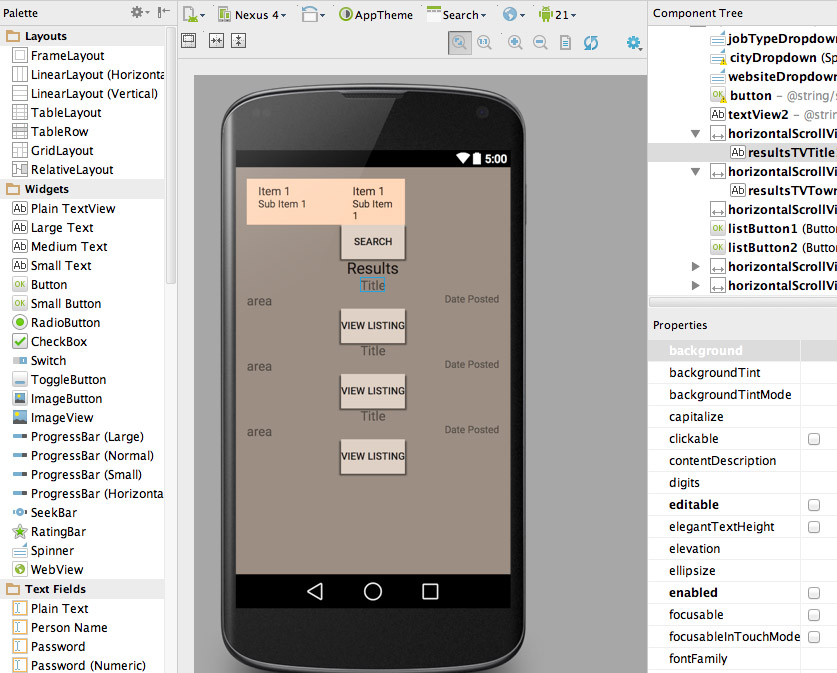
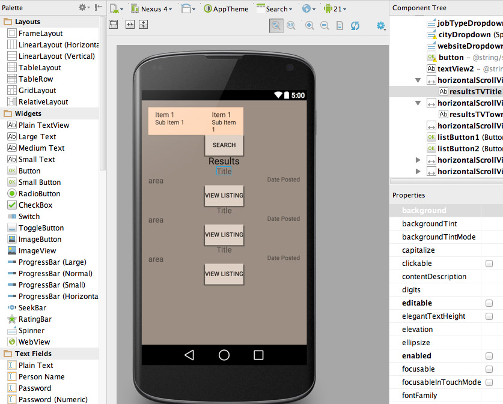

Classes
-
Mobile Programming: IOS and Android
Spring 2015
An introduction to Mobile app development using Android studio and Xcode IDEs and both Java and Swift Programming languages. -
Introduction to Programming Database Driven Websites with PHP
Spring 2015
Introduction to PHP server-side programming language as an OOP and the implementation of SQL into websites programmed with it. -
Introduction to Java Programming Using Games and Simulations
Spring 2015
An Introduction OOP based Java using the Greenfoot programming library. -
WebPublishing 1
Spring 2015
First course in web publishing series based on HTML and CSS. - other languages:sass, JSON, PERL
 
